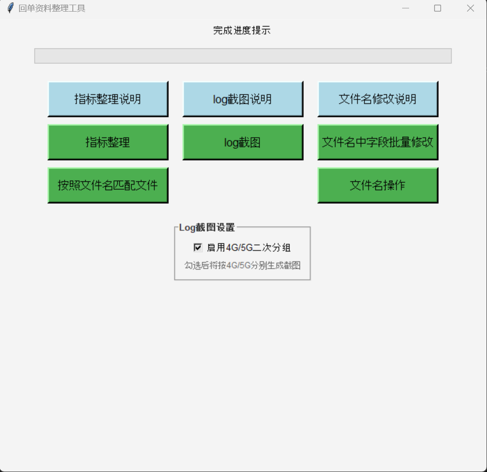
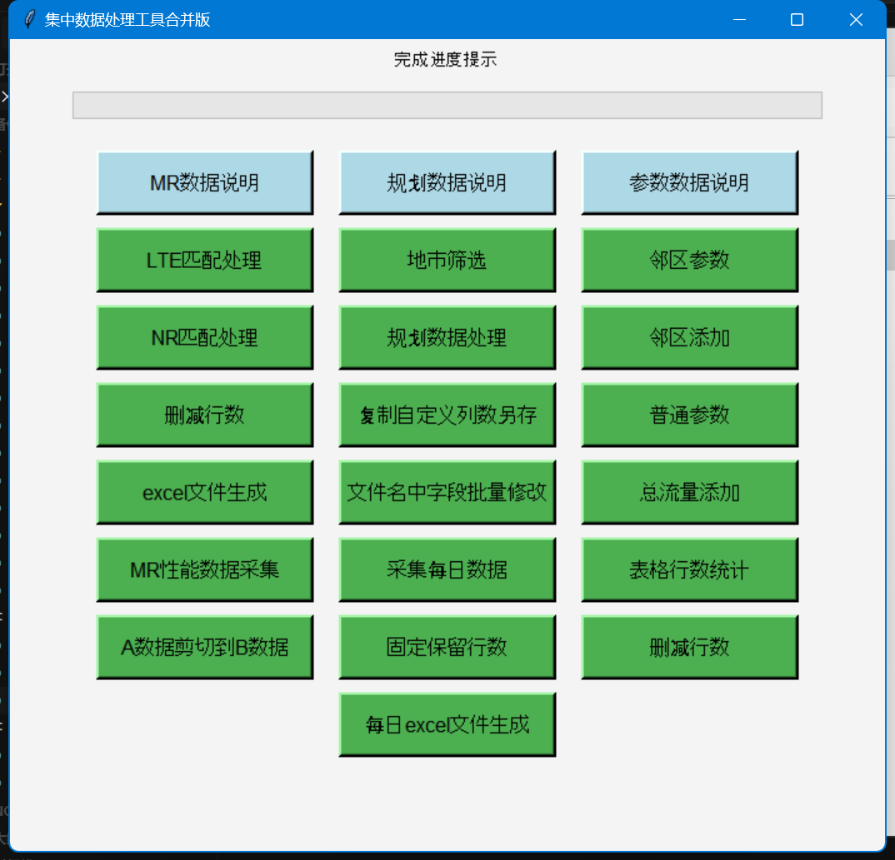

欢迎使用我的数据处理工具
这里提供了一系列专业的数据处理工具，为您的工作提供便捷高效的解决方案。这些工具针对不同的数据处理需求，能够帮助您快速完成工作，提高效率。
工具展示

下载工具
回单资料整理工具
专业的资料批量处理工具，包含指标整理、log截图和文件名批量修改三大功能模块。
使用说明
指标整理：
- 请按照程序提示选择需要处理的文件（可以多选）
- 处理结果将直接保存在当前文件夹中
log截图：
- 请按照程序提示选择保存log的文件夹（log文件名前面部分按照"地名+4/5G"命名）
- 整理图片将保存在当前目录
文件名批量修改：
- 请选择需要修改文件名的文件
- 按照提示输入需要修改的内容（","前面是被修改字段，","后面是修改后的字段）

下载工具
订单数据处理工具
功能强大的数据处理与分析工具，包含MR性能数据处理、规划数据处理和参数数据处理三大模块。
使用说明
MR性能数据处理模块：
- 首选将MR和性能原始数据分别放在2个文件夹里面
- 把"去后缀名.bat"也放在文件夹目录下双击运行后自动去除后缀名，然后将文件全部解压
- 运行"LTE匹配处理"或"NR匹配处理"程序
- 匹配结束后可以查看结果保存在"C:\excel"文件夹里
规划数据处理模块：
- 根据月度处理源文件，日期格式为'2024/04/16-2024/04/28'
- 筛选地市时要注意地市之间的逗号，比如'温州,丽水'
- 固定全部输出文件结果都在'C:\excel'
参数数据处理模块：
- 建议按照"邻区参数→邻区添加→普通参数→总流量添加→表格行数统计→删减行数"顺序按需运行
- (邻区添加)一定要先全部选择4到4的csv文件运行完后,再次运行程序选其他文件
关于我
我是一名专注于数据处理和自动化脚本开发的工程师，致力于为用户提供高效、实用的数据处理工具。多年来，我一直在不断优化和改进这些工具，以满足用户的各种需求。
这些工具主要针对特定行业的数据处理需求，能够显著提高数据处理效率，减少人工操作的时间成本。如果您有任何功能建议或遇到使用问题，欢迎联系我。
联系方式
如果您在使用过程中遇到任何问题，或者有新的功能需求，欢迎随时联系我：
微信/手机：15057337780
感谢您的支持和理解！